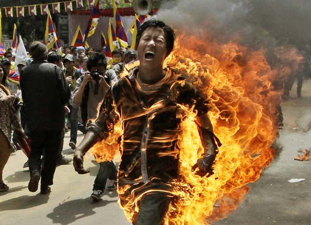
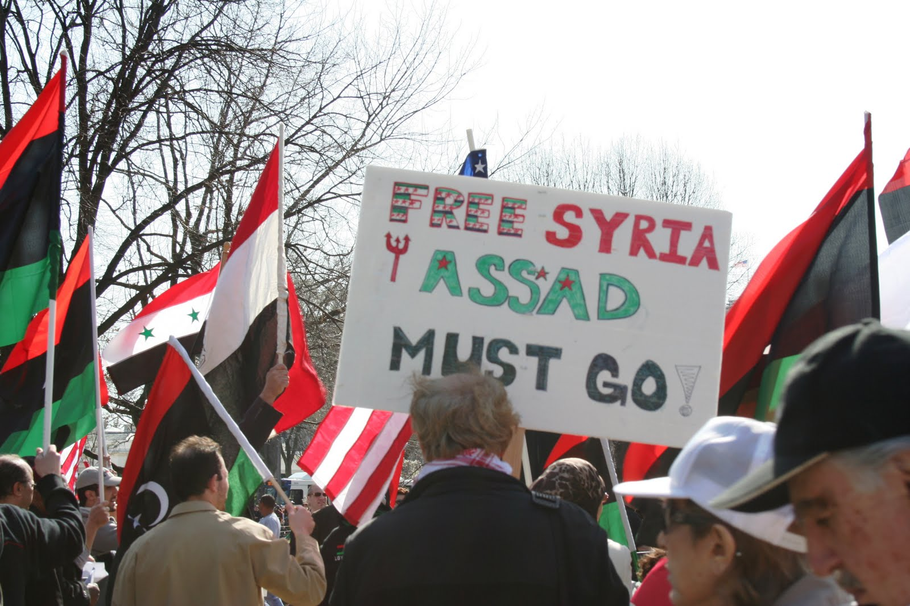

Arab Spring
These revolutionary protests and uprisings in the Middle East and North Africa, meant to reverse decades of authoritarian regimes in Egypt, Tunisia, Yemen, Syria, Libya, and the Persian Gulf, affect us today. Find out more below.
Areas affected by Arab Spring

Mohamed Bouazizi protesting the lack of perspectives in Tunisia by setting himself on fire.
During 2010, a policewoman allegedly slapped 26-year-old Mohamed Bouazizi in Sidi Bouzid, Tunisia for attempting to sell goods without a permit. In the face of public humiliation, Bouazizi set himself on fire in front of a government building.
Seeing Bouazizi as martyr, many erupted into protests, demanding President Zine El Abidine Ben Ali and his regime to step down. The president fled the country in 2011, and in response to the success in Tunisia, pro-democracy uprisings defying authoritarian regimes sparked in other areas of the Middle East. This wave of demonstrations and protests became known as Arab Spring.
Massive demonstrations ignited in Egypt, but as a major turning point in the movement, the Egyptian army refused to use force against the protestors. Without military support, President Hosni Mubarak left office. As a result of international military intervention, Egypt and Yemen remain unstable to this day. Thanks to the fear of intervening in Syria, Syrians have essentially been allowed to freely kill each other in a civil war between Assad’s government and the rebels.

Rebels in Syria against the rule of Assad.
Overall, Arab Spring failed to replace decades of stable authoritarian regimes with democracies, and political transitions were wracked with instability. Despite partial success in Egypt and Tunisia in overthrowing the dictatorship, no one had agreed on a new, political and economic model to replace the authoritarian regime. Ultimately, Arab Spring served to demonstrate that Arabs are not politically silenced by the ruling elite in the Middle East and will rise up whenever they see fit. However, the bloody situation in the Middle East is still unresolved.
Link to an article about Arab Spring in Tunisia and Egypt

Link to an article discussing the after-effects of Arab Spring
Link to an article of reflections by writers across the Arab world on Arab Spring